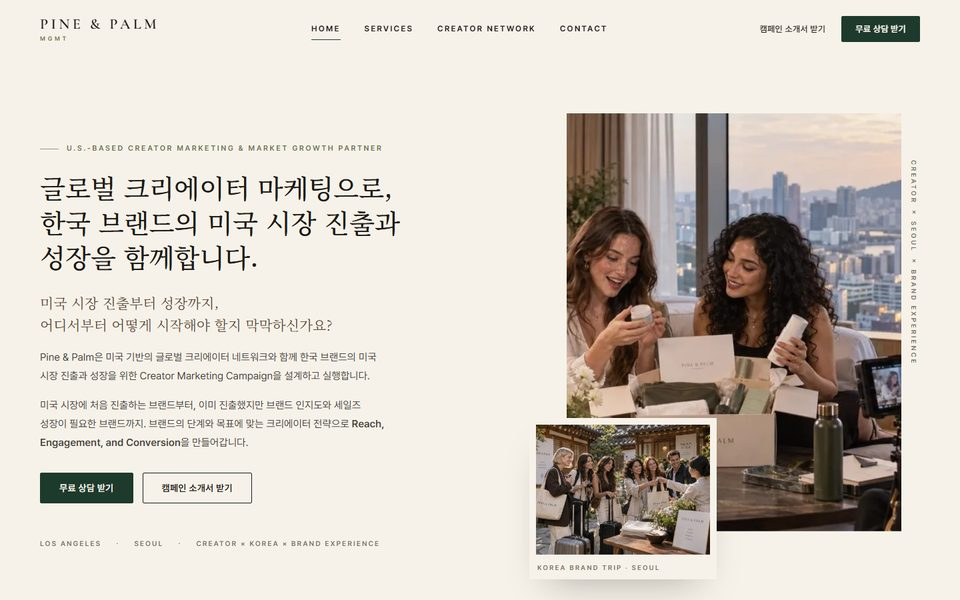
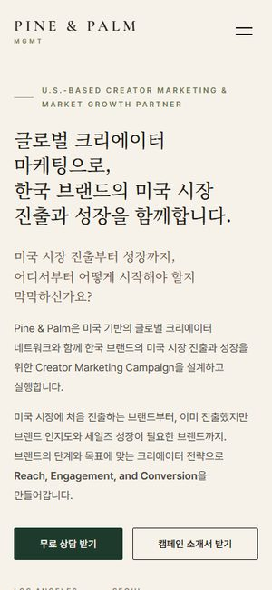
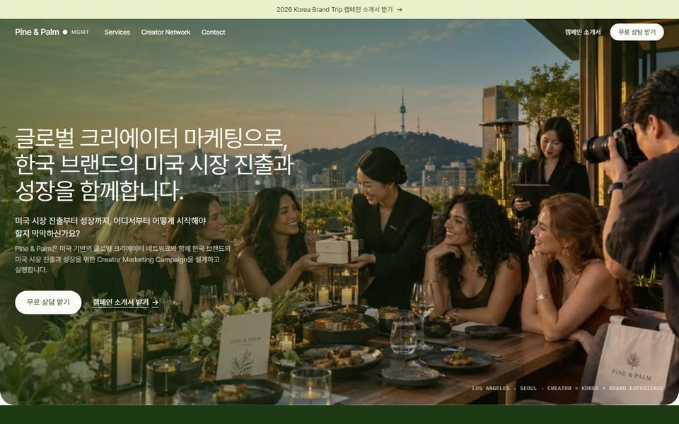
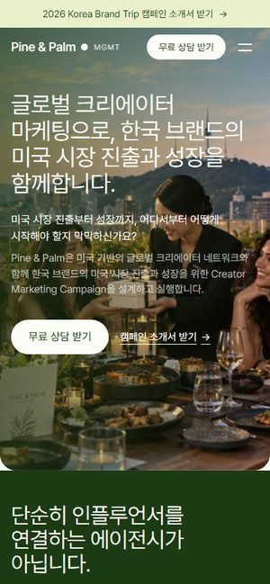
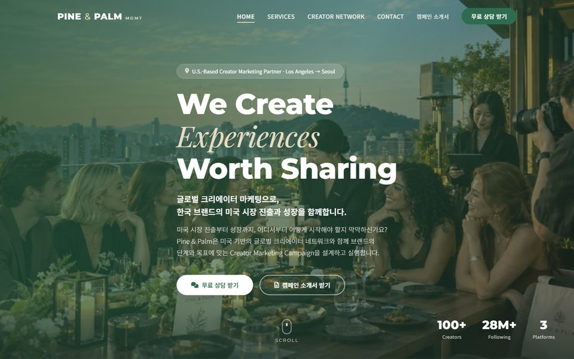
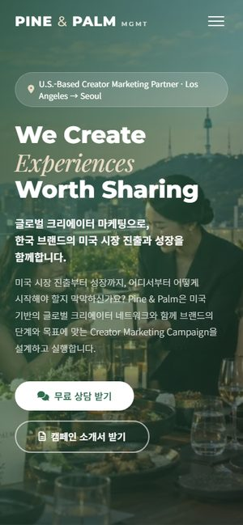

A Draft A프리미엄 에디토리얼 브리프의 무드를 그대로 따른 안입니다. 아이보리 배경에 딥 그린 포인트, 세리프 헤드라인, 얇은 괘선과 여백으로 패션 매거진의 호흡을 만들었습니다. 5단계 프레임워크는 스크롤에 따라 이미지가 바뀌고, 크리에이터 월은 크기가 다른 사진으로 짜여 있습니다. 브리프 무드 기준세리프 · 아이보리절제된 모션 시안 A 열기 HOMESERVICESCREATORSCONTACT
B Draft B클린 DTC 브랜드 글로벌 DTC 브랜드 사이트의 디자인 시스템을 적용한 안입니다. 산세리프와 알약형 버튼, 라운드 카드, 스노우 화이트와 딥 그린의 대비로 정돈된 인상을 줍니다. 서비스는 카드 4장으로, 5단계는 유리 카드 안에서 클릭·호버로 전환됩니다. 클린 · 모던산세리프 · 라운드카드 중심 시안 B 열기 HOMESERVICESCREATORSCONTACT
C Draft C다이내믹 랜딩 풀블리드 사진 히어로와 스크롤 리빌, 카운트업, 카드 틸트 등 움직임이 많은 안입니다. 같은 4페이지 구조에 그린 카운터 밴드, 슬라이더, 상담 카드 등 전환에 초점을 둔 컴포넌트를 배치했습니다. 톤은 파인 그린과 샌드로 브리프 팔레트에 맞췄습니다. 동적 · 전환 중심풀블리드 히어로모션 다수 시안 C 열기 HOMESERVICESCREATORSCONTACT